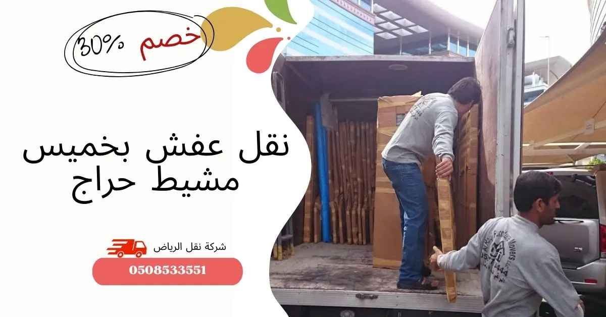

نقل عفش بخميس مشيط حراج

في عالم يتسم بالتغير والتطور السريع تبرز الحاجة إلى خدمات النقل كأحد العناصر الأساسية، التي تسهم في تسهيل حياة الأفراد والعائلات، ويعتبر نقل عفش بخميس مشيط حراج خيارًا مثاليًا للذين يسعون لتغيير مكان إقامتهم أو نقل أثاثهم من مكان لآخر، وإن اختيار شركة نقل موثوقة هو أمر بالغ الأهمية لضمان سلامة العفش وتحقيق تجربة نقل سلسة، ومن بين الشركات التي تلبي هذه الاحتياجات تبرز شركة نقل الرياض كخيار رائد يتمتع بسمعة جيدة وخدمات متنوعة تلبي كافة احتياجات العملاء، فمع الخبرة والاحترافية تعد شركة نقل الرياض الخيار الذي يعتمد عليه في كل ما يتعلق بنقل العفش بأمان وكفاءة.
نقل عفش بخميس مشيط حراج
تعتبر عملية نقل عفش بخميس مشيط حراج إلى الرياض من العمليات التي تتطلب تخطيطًا دقيقًا وتنفيذًا احترافيًا، وإليك بعض النقاط المهمة التي يجب أخذها بعين الاعتبار عند التفكير في هذه الخدمة:
التخطيط المسبق
يجب على العملاء وضع خطة محكمة تشمل توقيت النقل وتفاصيل التعبئة والتغليف، ويساعد التخطيط الجيد في تحديد الأوقات المثلى للنقل مما يقلل من الازدحام ويضمن الوصول في الوقت المحدد.
تقييم الأثاث
يتم تقييم العفش لتحديد كيفية التعامل معه بشكل آمن بما في ذلك العناصر الهشة أو الثقيلة، ويتضمن ذلك فحص كل قطعة بعناية، وتحديد ما إذا كانت بحاجة إلى تغليف خاص أو تفاصيل إضافية.
أسعار تنافسية
تعتبر ارخص شركة نقل عفش بالرياض وتقدم شركة نقل الرياض أسعارًا مرنة تناسب مختلف الميزانيات مما يجعل الخدمة متاحة للجميع، ويمكن للعملاء الحصول على عروض خاصة أو حزم مرنة تتناسب مع احتياجاتهم.
تعبئة احترافية
استخدام مواد تعبئة عالية الجودة مثل الفقاعات الهوائية والصناديق القوية لحماية الأثاث، وتشمل العملية أيضًا استخدام قطع قماشية لحماية الأسطح الحساسة مما يضمن عدم تعرضها لأي خدوش أو تلف.
نقل آمن
ضمان نقل العفش باستخدام شاحنات مجهزة بشكل جيد مع مراعاة كافة وسائل الأمان، ويتم تأمين العفش داخل الشاحنة باستخدام أحزمة خاصة لمنع الحركة أثناء النقل.
تحديد الزمن
تقدير الوقت اللازم لإتمام عملية النقل بشكل دقيق لتجنب أي تأخير، ويعتمد هذا على المسافة وحجم الأثاث وظروف الطريق.
خدمات إضافية
إمكانية توفير خدمات تركيب الأثاث في الوجهة الجديدة مما يضمن راحة العملاء بعد النقل، وتعتبر هذه الخدمة مفيدة بشكل خاص للأثاث المعقد أو الكبير.
نقل عفش من خميس مشيط إلى الرياض
تتطلب عملية نقل عفش بخميس مشيط حراج والرياض خبرة واحترافية لضمان نجاح العملية، بينما تعتمد شركة نقل الرياض على فريق عمل محترف لضمان تنفيذ الخدمة بكفاءة، وإليك ما يمكنك توقعه عند استخدام هذه الخدمة:
- الفحص المسبق: إجراء فحص شامل لكل قطعة أثاث لتحديد الطريقة المثلى لنقلها، ويشمل ذلك تحديد الأبعاد والوزن مما يساعد في اختيار الشاحنة المناسبة.
- اختيار المسار المناسب: اختيار الطرق الأقل ازدحامًا لتقليل وقت النقل، ويعتمد هذا على البيانات الحالية لحركة المرور مما يساعد في تفادي أي تأخير محتمل.
- مراقبة النقل: متابعة عملية النقل من البداية حتى النهاية لضمان سلامة الأثاث، ويتضمن ذلك توفير تحديثات للعملاء حول موقع الشاحنة.
- تأمين شامل: توفير خيارات تأمين لحماية الأثاث من الأضرار أثناء النقل، ويمكن للعملاء اختيار تأمين شامل يغطي كافة الأضرار المحتملة.
- استجابة فورية: القدرة على التعامل مع أي طارئ قد يحدث أثناء النقل مثل الطقس السيئ أو مشاكل الطريق، وبتم تدريب الطاقم على اتخاذ إجراءات سريعة للتخفيف من أي مشاكل.
- خدمات العملاء: توفير دعم مستمر للعملاء قبل وأثناء وبعد النقل للإجابة على أي استفسارات أو مخاوف، ويتيح ذلك للعملاء الاطمئنان إلى أن كل شيء تحت السيطرة.
- إعداد خطة طوارئ: وجود خطة بديلة في حالة حدوث أي مشاكل غير متوقعة أثناء النقل مثل تأخير الطرق أو فحص أمني مفاجئ.
شركة نقل عفش
تعتبر شركة نقل الرياض واحدة من الشركات الرائدة في مجال نقل عفش بخميس مشيط حراج وبالمملكة، وتميزت الشركة بتقديم خدمات متكاملة تلبي احتياجات العملاء، وإليك بعض السمات التي تبرز تميز الشركة:
- سمعة ممتازة: سمعة طيبة نالتها الشركة بفضل خدماتها المميزة واحترافيتها في التعامل مع العملاء، وتحظى الشركة بآراء إيجابية من العملاء مما يعكس مصداقيتها.
- فريق عمل مؤهل: يتكون الفريق من محترفين ذوي خبرة في مجال نقل العفش مما يضمن تنفيذ المهمة بكفاءة، ويتم تدريب الفريق على تقنيات التعبئة والنقل بشكل دوري.
- تقنيات حديثة: استخدام معدات وتقنيات متطورة لتسهيل عملية النقل وتقليل أي مخاطر، وتشمل هذه المعدات الرافعات والشاحنات المتخصصة.
- التزام بالمواعيد: الالتزام بالمواعيد المتفق عليها مع العملاء لضمان رضاهم، وتقوم الشركة بإعداد جدول زمني دقيق يلتزم به الفريق.
- شهادات العملاء: الحصول على تقييمات إيجابية وشهادات من عملاء سابقين تعكس جودة الخدمة، ويمكن للعملاء الجدد الاطلاع على هذه الشهادات قبل اتخاذ قرارهم.
- خدمات متنوعة: تقديم مجموعة متنوعة من خدمات النقل بما في ذلك النقل المحلي والدولي، مما يلبي احتياجات جميع العملاء، وتشمل الخدمات أيضًا النقل التجاري.
- تسهيلات الدفع: توفير خيارات دفع مرنة تناسب جميع العملاء بما في ذلك الدفع عبر الإنترنت أو عند التسليم.
أفضل شركة نقل عفش في السعودية
عندما يتعلق الأمر بالبحث عن أفضل شركة لخدمات نقل عفش بخميس مشيط حراج في السعودية تبرز شركة نقل الرياض كخيار رئيسي، وتتسم الشركة بمواصفات تجعلها تتفوق على منافسيها، وإليك بعض النقاط التي تبرز تميزها:
تاريخ طويل في السوق
سنوات من الخبرة تجعل الشركة رائدة في هذا المجال وتعرف متطلبات السوق، ويتيح لها ذلك تقديم خدمات تتناسب مع احتياجات العملاء المتنوعة.
تنوع الخدمات
تقديم مجموعة متنوعة من خدمات النقل لتلبية جميع احتياجات العملاء، سواء كانت نقل عفش منزلي أو تجاري، وتشمل الخدمات النقل الفوري أو المجدول.
تقييمات العملاء
تقييمات إيجابية من العملاء السابقين تعكس جودة الخدمة ورضا العملاء، وتعتمد الشركة على ملاحظات العملاء لتحسين خدماتها بشكل مستمر.
أسعار مرنة
خيارات مختلفة تتناسب مع جميع الميزانيات مما يجعل الخدمة متاحة للجميع، كما تقدم الشركة خصومات خاصة للمجموعات الكبيرة.
استجابة سريعة
سرعة في الاستجابة لاستفسارات العملاء وحل مشكلاتهم مما يعكس احترافية الشركة، وتوفر الشركة دعمًا فنيًا على مدار الساعة.
تقديم استشارات مجانية
تقديم نصائح واستشارات للعملاء حول أفضل طرق النقل، مما يساعدهم في اتخاذ قرارات مستنيرة بناءً على احتياجاتهم.
خدمة العملاء
فريق دعم متاح للإجابة على الاستفسارات وتقديم المساعدة على مدار الساعة، مما يضمن حصول العملاء على الدعم الذي يحتاجونه.
شركة نقل الرياض لنقل عفش بالرياض
تعتبر شركة نقل الرياض الخيار المثالي لعمليات نقل عفش بخميس مشيط حراج، وتقدم الشركة خدمات متكاملة تضمن راحة العملاء، وإليك ما يمكن توقعه عند التعامل مع الشركة:
| فريق محترف | طاقم عمل مدرب على أعلى مستوى لضمان تنفيذ المهمة بكفاءة واحترافية، ويتم اختيار الأفراد بعناية بناءً على خبراتهم ومهاراتهم. |
| استشارات مجانية | تقديم استشارات مجانية حول كيفية نقل العفش بشكل آمن وفعال مما يساعد العملاء في اختيار الحلول المناسبة لهم. |
| جدولة مرنة | إمكانية تحديد موعد النقل بما يتناسب مع جدول العميل واحتياجاته مما يوفر مرونة في اختيار الوقت المناسب للنقل. |
| خدمات مخصصة | إمكانية تخصيص الخدمة وفقًا لاحتياجات العميل الخاصة مثل نقل العفش الثقيل أو الهش مما يضمن تلبية كافة المتطلبات الخاصة. |
| التقييم بعد الخدمة | طلب تقييم من العميل بعد انتهاء الخدمة لضمان رضاهم، وتستخدم هذه التقييمات لتحسين جودة الخدمة بشكل مستمر. |
| المرونة في التعامل | القدرة على التكيف مع التغيرات أو الظروف غير المتوقعة مثل تغير مواعيد النقل أو إضافة عناصر جديدة. |
| خدمة الاتصال المباشر | توفير خطوط اتصال مباشرة لتسهيل التواصل مع العملاء مما يضمن استجابة سريعة لأي استفسارات. |
خدمات شركة نقل الرياض
تقدم شركة نقل الرياض مجموعة شاملة من الخدمات التي تساهم في نقل عفش بخميس مشيط حراج، وإليك بعض هذه الخدمات:
- خدمة التعبئة والتغليف: توفير مواد تغليف متينة لحماية العفش من أي أضرار أثناء النقل، ويشمل ذلك توفير صناديق مخصصة لكل نوع من الأثاث.
- خدمة النقل: نقل العفش باستخدام شاحنات مجهزة بأحدث التقنيات لضمان الأمان، وتشمل الشاحنات أنظمة التعليق الخاصة لتقليل الاهتزازات أثناء النقل.
- تركيب الأثاث: مساعدة العملاء في تركيب الأثاث بعد الوصول إلى الوجهة مما يوفر عليهم الوقت والجهد، ويتم توفير أدوات خاصة لتسهيل عملية التركيب.
- خدمات التخزين: توفير خدمات تخزين آمنة للعفش عند الحاجة مع ضمان حماية العفش وحفظه في ظروف مثالية، وتشمل الخدمات التخزين القصير والطويل الأجل.
- استشارات مجانية: تقديم نصائح واستشارات متعلقة بالنقل، مما يساعد العملاء في اتخاذ قرارات مستنيرة بناءً على احتياجاتهم.
- خدمات ما بعد النقل: متابعة مع العملاء بعد إتمام الخدمة لضمان رضاهم عن الخدمة المقدمة، وتتضمن هذه المتابعة استبيانات تقييم الأداء.
- تقديم عروض خاصة: تقديم عروض خاصة للعملاء الجدد أو للطلبات الكبيرة مما يمنحهم قيمة مضافة ويعزز من ولاء العملاء.
الأسئلة الشائعة حول نقل عفش بخميس مشيط حراج
هل يمكنني تحديد موعد النقل؟
بلتأكيد يمكنكم تحديد الموعد المناسب لكم وسنقوم بالتنسيق معكم لضمان تنفيذ الخدمة في الوقت المطلوب.
كيف يمكنني الاتصال بشركتكم؟
يمكنكم الاتصال بنا عبر الهاتف أو زيارة موقعنا الإلكتروني حيث تجدون كافة معلومات الاتصال.
هل تقدمون ضمانًا على العفش المنقول؟
نعم نقدم خيارات تأمين لحماية العفش أثناء النقل مما يضمن راحة البال للعملاء.
ما هي مدة النقل المتوقعة؟
تعتمد مدة النقل على المسافة وحجم العفش ولكننا نعمل على تقليل الوقت قدر الإمكان مع الحفاظ على جودة الخدمة.